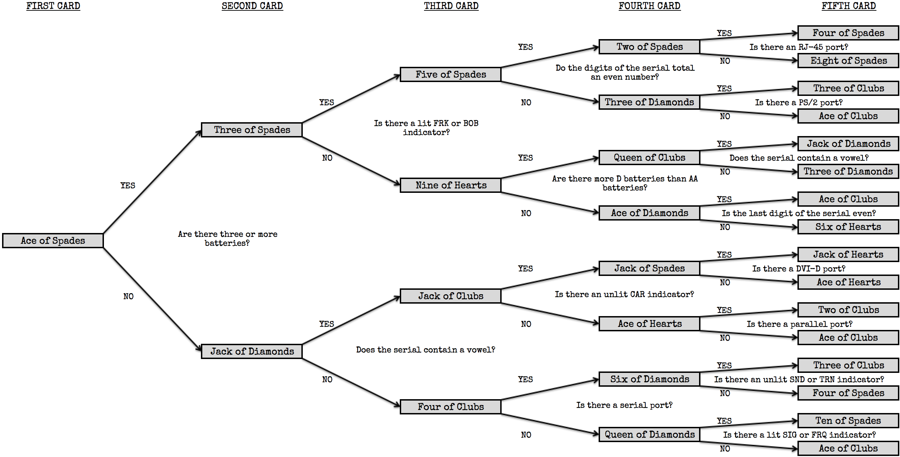

On the Subject of Poker
Usually in poker, the wrong call means losing a lot of money. Here, it means death.
SEE APPENDIX PK71 FOR POKER HAND RANKINGS.SEE APPENDIX PK72 FOR LARGER COPIES OF THE FLOW CHARTS.
The module will display a single face-up card.
You must push two of the buttons and one of the face-down cards in order to disarm it.
Use the given card to determine which of the four flow charts you should use.
Use the flow charts to determine your 5-card poker hand and press the appropriate button.
Your opponent will then respond. Use the two-way table to determine whether the response is the "truth" or a "bluff".
Your opponent will then make a bet. Use the betting rules to determine which of the four final cards you should press. - If you have NO HAND, press FOLD.
- If you have A PAIR or TWO PAIR, press CHECK.
- If you have THREE OF A KIND or A STRAIGHT, press MIN RAISE.
- If you have A FLUSH or A FULL HOUSE, press MAX RAISE.
- If you have FOUR OF A KIND or A STRAIGHT FLUSH, press ALL-IN.
Flow Charts
